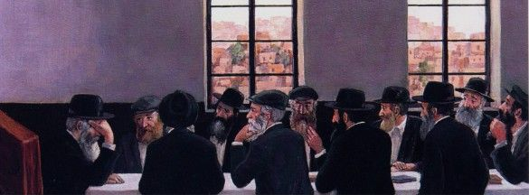

Shabbos Lights from Our Rebbeim
Why did it take the Alter Rebbe two hours to wipe his Shabbos cup? What did Rabbi Levi Yitzchok Schneersohn say when there was no food for Shabbos? * A compilation of stories about our Rebbeim and Shabbos, presented for Parshas VaEschanan when we read “Preserve the Shabbos to sanctify it.”
DIFFERENT HEIGHT FOR SHABBOS

For Chassidim, Shabbos Kodesh was always an elevated day; all the more so for the Rebbeim. Sometimes, permission is granted for a peek into another world, to understand that Shabbos is an entirely different reality, elevated beyond any other lofty concept.
In one of the sichos, the Rebbe says that while on weekdays the Baal Shem Tov was “one third above and two-thirds below, on Shabbos, he was two-thirds above and one-third below.”
Regarding the tzaddik who authored Beer Mayim Chaim, it is said that on Shabbos he was a head taller than he was on weekdays. Throughout the week, he stood at the eastern wall of the beis midrash under one of the wings extending from the Aron Kodesh, but on Shabbos he had to stand off to the side. When they told this to the mashpia Rabbi Shmuel Gronem Esterman, he remarked that the Baal Shem Tov’s tailor said that the Shabbos clothing that he sewed for the Baal Shem Tov were much longer than his weekday clothes and yet they were not too long.
(Reshimos D’varim, vol. 1, p. 3)
THE TREE UNDER WHICH THE ALTER REBBE SPENT SHABBOS
If the Rebbe had not agreed, they would not have been able to incarcerate him. Proof for this is the journey to Petersburg. On Friday, the black wagon stopped and the four horses could not pull it.
The Rebbe did not want to travel further when it was six hours before candle-lighting time, and the wagon stopped in the middle of the road. The general and the soldiers realized it was no ordinary matter when the axles suddenly broke and then, when they fixed them, a horse died. They brought new horses and they still could not move the wagon, and they asked the Alter Rebbe to allow them to travel to a nearby village. The Rebbe did not agree.
It was only when they asked that he allow them to move the wagon from the middle of the road to a field off the road that he agreed to that. That is where he spent Shabbos. It was two or three viorsts [Russian land measure] from Saliba-Rudnya which is near the town of Nevel.
The Chassid R’ Michoel the Elder from Nevel would tell that he knew Chassidim who could point at the place where the Alter Rebbe spent Shabbos. He himself went there to see it. All along the road, on both sides, there were old, broken trees, and the place where they had moved the wagon was near a large, beautiful tree with many branches. When R’ Michoel spoke about it and described the details of the place, he was energized and was in an aroused state of fear of Heaven. He was full of feelings of elevated character traits from the experience of just seeing the tree, more than people today are inspired by learning a topic in avoda.
(Rebbe Rayatz, Likkutei Dibburim)
WHAT IT MEANS TO SANCTIFY THE SHABBOS
Chassidim told the Tzemach Tzedek about the tzaddik Rabbi Nachum of Chernobyl, that one Shabbos they gave him a cup of wine for Kiddush, but he trembled until the wine spilled. They refilled the cup and it spilled again. This happened a few times until he overcame the tremor in his hands and made Kiddush.
When they asked him afterward about it, he said, “When they handed me the cup, I started thinking before Whom I was standing and sanctifying and such a great fear fell upon me and my entire body trembled.”
The Tzemach Tzedek said, “I will tell you a greater wonder about my grandfather, the Alter Rebbe. One Shabbos, they handed him a cup for kiddush and he began wiping the cup after the rinsing and washing and he remained that way for more than two hours.”
SHABBOS REVOLVED AROUND THE CHASSIDISHE MAAMER
On Friday, right after Mincha, the T’mimim arranged the tables. Then they all grabbed places (with plenty of pushing) and the group began to sing. The niggunim, expressing both bitterness and joy, uplifted the soul and the listeners felt themselves going from the mundane to the holy. It was a wondrous sight, as the sanctity of Shabbos hovered over all those present. Everyone’s face glowed and they all listened to the niggunim that captivated the heart with exultant awe and sweetness.
Silence fell as they heard the footsteps of the Rebbe, the Admur Rashab, and then the Rebbe appeared in his glory. On his head was a magnificent sable shtraimel, and on his shoulders was a silk overcoat. A silk kerchief, white as snow, was around his neck, and his face shone. One could see in him what Chazal say, “There is no comparison between the glow of a person’s face on the weekdays and the glow of the face on Shabbos.” It seemed like an angel of G-d had appeared in the hall.
He walked in with measured steps and sat in his place. He tied a red kerchief on his right hand. He sat there silently for a while and he and his son, later the Rebbe Rayatz, looked at one another. Then he began the maamer in a quiet voice. His voice rose from moment to moment until it became a mighty roar of fire, and his face was aflame. It was silent as he said the maamer which lasted, usually, for an hour and a half.
After saying the maamer, everyone davened Maariv and most of the talmidim and guests went to eat the Shabbos meal. But a group of talmidim and guests remained and reviewed the maamer. A long time passed until they succeeded in clarifying the maamer, and only when they finished did they also daven and sit down for the meal. Although it was late, they gathered again after the meal and reviewed the maamer so that it would not slip from their grasp, and only then went to sleep.
In the morning, R’ Shilem Kuratin, the head chozer, went with his helpers and some of the distinguished guests to the Rebbe’s house for review. The Rebbe would sit and Shilem reviewed the maamer. If words were missing, or the connection between the topics was somewhat unclear, the Rebbe would fill in and clear things up, and sometimes he would explain something difficult in the maamer. Then Shilem went out and reviewed the maamer. The maamer was already fully absorbed in his mind and he reviewed it well. After davening and the Shabbos meal, the helpers also reviewed the maamer, but everyone sought to hear it from Shilem.
That’s the how the Shabbos went, revolving around the maamer, with eating and sleeping happening in passing. The Shabbos meals were prepared in a generous fashion, but the talmidim were immersed and preoccupied with reviewing the maamer. They felt the sanctity and pleasure of Shabbos only through the maamer and t’filla.
(Zichronosai p. 45)
SHABBOS BEHIND BARS
Shabbos Kodesh, Parshas Shlach 5687/1927:
The Rebbe Rayatz was in prison and his life in danger, but even in this place, behind bars, under the watchful eyes of the wicked, the Rebbe welcomed the Shabbos queen with solemnity and a joyful heart. “Hodu LaHashem Ki Tov, Ki L’olam Chasdo ...” began the Rebbe as he davened with a voice saturated with feeling and sweetness while the other prisoners in the cell stood and listened, their souls melting within them. “Those who sit in darkness and the shadow of death, prisoners of affliction and iron… And they cried out to the L-rd in their distress; from their straits He saved them. He took them out of darkness and the shadow of death, and He broke open their bonds. They shall give thanks to the L-rd for His kindness, and for His wonders to the children of men.”
Even under such circumstances, it was a mitzva to make Kiddush and testify to the creation of heaven and earth, to eat the Shabbos meal as is fitting and proper. The Rebbe said Kiddush over bread that was brought to him, miraculously, in time, and he cut it as he recited the HaMotzi bracha loudly, with a special Chabad tune.
The Rebbe had his first Shabbos meal in prison with the piece of challa and a little water from the faucet.
The guard’s attitude changed for the better once the Rebbe succeeded in breaking his interrogators. Since then, every evening, he made sure to update the Rebbe about the time, so the Rebbe could daven Maariv; for during the summer, the days in Leningrad are very long and last even until midnight. The guard knocked on the door as a prearranged signal that it was time for Maariv.
On the first Motzaei Shabbos, the guard gave the Rebbe two matches so he could say the blessing over the fire. Shabbos was over and it was the time for Dovid Malka Meshicha. The Rebbe said “VaYitein Lecha” with joy.
NO FOOD BUT THERE ARE SPICES
Rebbetzin Chana a”h related that one Erev Shabbos while in exile with her husband Rabbi Levi Yitzchok Schneersohn, in Kazakhstan, it reached the point where they had nothing in the house. Nor was there any possibility of making Kiddush and eating anything over Shabbos.
Shabbos began and the Rebbetzin was quite upset. She knew that her husband was aware of the situation but could do nothing about it.
Her husband finished Kabbalas Shabbos and Maariv and the table remained empty. The Rebbetzin was anguished but then she looked up and was astonished to see her husband walking about the room lost in his thoughts, glowing with joy and murmuring the words of the Sages, “There is a spice that we have and Shabbos is its name …”
A SUMMER SHABBOS IN PARIS
Rabbi Nachum Yakobovitch, who knew the Rebbe as a young man in Paris, retold:
One Shabbos in 1947, when the Rebbe was in Paris to welcome his mother, Rebbetzin Chana, I saw an amazing sight which remained etched in my mind.
It was summer and Paris was suffering from a heat wave. On Friday, the Rebbe got a hold of a new book of Chassidus that had just been published (I think it was the hemshech “V’Kacha”). When Shacharis of Shabbos was over, the worshipers hurried home for the Shabbos meal, but the Rebbe, who was known as Ramash, went to the women’s section and sat in a corner with his hat, sirtuk and gartel on. It was terribly hot in the women’s section. I went up there but couldn’t take it for more than three minutes. The Rebbe sat there with the book for six or seven hours in a row, without moving, until Mincha.
After they davened Mincha, the Rebbe sat down for the third Shabbos meal (he did not eat) and listened to Divrei Torah.
I recall that after Maariv, the Rebbe made Havdala, and then someone, not Lubavitch, went over to him, who had a trimmed beard. The man, who was “enlightened” in his views, asked the Rebbe to prove to him the existence of a soul.
With endless patience, the Rebbe sat and responded to him in French, at length. Then a young yeshiva man went over to the Rebbe and presented a question on Tosafos in Bava Kama. The Rebbe explained it again and again with great patience.
WE ARE THERE ON SHABBOS AND YOM TOV
It was 5742 when the Rebbe and Rebbetzin began spending Shabbos and Yom Tov not at home on President Street but in the library near 770 where a furnished apartment was set up for them.
They first used the apartment on the night of Rosh Hashana. Interestingly, when the Rebbe walked in, he began looking at the s’farim there, as the Rebbetzin described it, “like a child playing with his toys, with great delight … until they had to remind him about making Kiddush …”
This arrangement lasted until the Rebbetzin passed away on 22 Shevat 5748 when the Rebbe was in his house for the entire first year. Then he stayed in his office throughout the week, including Shabbos.
Rabbi Sholom Ber Gansburg, who served as a personal aide in the Rebbe’s home, related an astonishing fact:
“It happened close to Shavuos, a few years after the passing of the Rebbetzin when the Rebbe ate and slept in his office in 770. Rabbi Sholom Ber Levin, head librarian, wanted to expand the library into the area that contained the apartment where the Rebbe previously ate and slept on Shabbos and Yom Tov. Although the Rebbe no longer used the apartment, he still asked me to ask the Rebbe about this.
“When I asked, the Rebbe said in surprise, ‘What do you mean? We are there on Shabbos and Yom Tov and it is about to be Shabbos and Yom Tov [that year Shabbos led into Shavuos]. And you can tell them this.’
“The amazing thing is that the Rebbe said they were there when it was years after the Rebbetzin’s passing and the Rebbe himself did not eat nor sleep in the apartment in the library. Nevertheless, he referred to the upcoming Yom Tov of Shavuos and said ‘we are there.’”
NOTHING NEW
A while after the Rebbe announced the candle-lighting campaign for Jewish girls, even little ones, Rabbi Yirmiyahu Aloy of South Africa went to the Rebbe and said he did not understand the chiddush, for in Dokshitz, the Chassidic town where he was born, that was the custom!
The Rebbe smiled and said that he did not intend to come up with new things; rather, he was reminding people of a custom that was prevalent in Jewish towns in a number of communities.
Beis Moshiach (staff). "Shabbos Lights from Our Rebbeim." Beis Moshiach, no. 1128 (July 25, 2018).